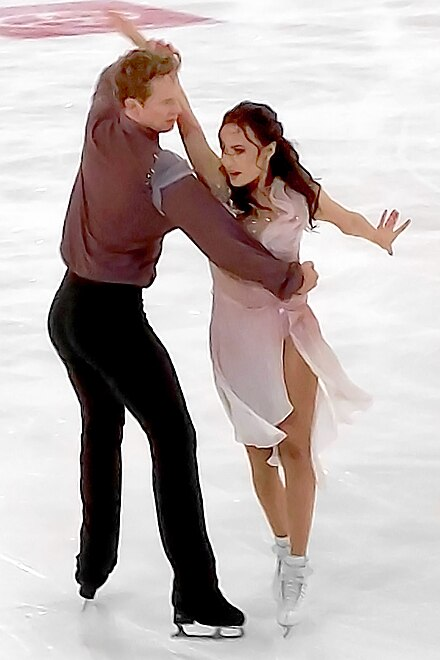

At junior levels, there are some skaters who perform in more than one disciple as many pairs and ice dance skaters get their start in singles skating.
However, when competing at senior levels, skaters limit themselves to a single area.
Singles
Carolina Kostner at the 2009 World Championships Nathan Chen performing his short program at 2019 Skate America Alina Zagitova at the 2018 Winter Olympics in Pyeongchang, South Korea
Singles skating is exactly what it sounds like - there is one skater that performs jumps, spins and edge sequences that incorporate dance elements to a piece of music.
The competitors are split up into women's and men's divisions as for some aspects of the sport that require immense strenght like jumps, male skaters have an advantage.
Kurt Browning is a world famous male Canadian singles figure skater.
In 1988, he became the first person to land a quadruple jump in competition at the World Figure Skating Championships.
In 1989, he won his first world figure skating title, eventually becoming a four time world champion.
After retiring from competition, he spent almost two decades performing with Stars on Ice across Canada and the United States.
In 1990, Browning made it into the Canadian Olympic Hall of Fame and in 2006, the World Figure Skating Hall of Fame.
Kurt Browning last preformance in Stars on Ice to "Feeling Good" by Adam Lambert
Kaetlyn Osmond is one of Canada’s most accomplished female figure skaters.
She has won three Olympic medals - a gold and silver at the 2018 PyeongChang Olympics in South Korea and a bronze medal at the 2014 Sochi Olympics in Russia.
After placing second at the 2017 World Championships in Helsinki Finland, Osmond went on to take first place at the 2018 World Championships
in Milan, Italy, making her the first Canadian to win a women’s singles world figure skating championship in 45 years.
Kaetlyn announced her retirement in 2019 after participating in a cross Canada skating exhibition.
Kaetlyn Osmond's Short Program in Women's Figure Skating | Pyeongchang 2018

Madison Chock and Evan Bates, 2022 Federica Faiella and Massimo Scali perform their compulsory dance at the 2009 Cup of China Lilah Fear and Lewis Gibson perform a Curve dance lift
Competitive ice dance is always performed by a male and female skater in partnership.
Although it is possible to perform a dance without a partner at lower competitive levels, getting the timing when performing a solo dance routine can be harder than trying to match a partner’s steps.
This is the skating discipline that often looks the most romantic due to the primary focus being on the connection between the skaters, their moves on the ice and the music.
Tessa Virtue & Scott Moir
Tessa Virtue and Scott Moir are arguably one the world’s favourite ice dance pairs of all time.
They competed in ice dance for 22 years and have won many medals.
This Canadian couple are three time world champions and two time Olympic champions.
They won a gold medal in ice dance for Canada at both Vancouver 2010 and PyeongChang 2018 Winter Olympics as well as a silver at the Sochi Olympics in 2014.
The pair has amazing chemistry and it showed on the ice.
Their routines were filled with emotion and expression. Unfortunately, they retired in 2019.
Tessa Virtue, Scott Moir Free Dance at Winter Olympics | Pyeongchang 2018
Wenjing Sui and Cong Han performing their short program at the 2019 Four Continents Anastasia Mishina and Aleksandr Galiamov perform their free skate at the 2019 Russian Championships Tong Jian and Pang Qing from China perform a twist lift at the 2010 Olympics
Pairs skating is different from ice dance as it includes complicatd lifts as well as jumps, spins and dance elements.
Because of those lifts, it is typically the discipline that looks the most dangerous.
Pair skaters are required to perform two jump skills: side-by-side jumps, in which jumps are accomplished by each skater beside each other and in unison,
and throw jumps, in which the woman performs the jump when assisted and propelled by her partner.
Meagan Duhamel & Eric Radford
Meagan Duhamel and Eric Radford are a Canadian couple who are two time world champions and Olympic medalists.
They won a bronze medal in pair skating for Canada at PyeongChang 2018 Winter Olympics.
They won back-to-back world titles in 2015 and 2016, making them the first Canadian pair to successfully defend their world gold medal since Barbara Wagner and Robert Paul who won four straight from 1957 to 1960.
Since they both had excellent singles skating skills, they could include the most difficult and breathtaking pairs jumps in their routines.
These included side by side triple lutzes jumps executed in unison, and a quad throw salchow that starts with Eric tossing Meagan high into the air where she would spin four times before landing gracefully on one leg.
Meagan Duhamel, Eric Radford Short Program in Team Figure Skating | Pyeongchang 2018